A three phase induction motor is basically a constant speed motor so it’s somewhat difficult to control its speed. The speed control of induction motor is done at the cost of decrease in efficiency and low electrical power factor. Before discussing the methods to control the speed of three phase induction motor one should know the basic formulas of speed and torque of three phase induction motor as the methods of speed control depends upon these formulas.
Synchronous speed
Where f = frequency and P is the number of poles
The speed of induction motor is given by,
Where N is the speed of rotor of induction motor,
Ns is the synchronous speed,
S is the slip.
The torque produced by three phase induction motor is given by,
When rotor is at sandstill slip , s is one.
So the equation of torque is,
Where E2 is the rotor emf
Ns is the synchronous speed
R2 is the rotor resistance
X2 is the rotor inductive reactance
The Speed of Induction Motor is changed from Both Stator and Rotor Side
The speed control of three phase induction motor from stator side are further classified as :
- V / f control or frequency control.
- Changing the number of stator poles.
- Controlling supply voltage.
- Adding rheostat in the stator circuit.
The speed controls of three phase induction motor from rotor side are further classified as:
- Adding external resistance on rotor side.
- Cascade control method.
- Injecting slip frequency emf into rotor side.
Speed Control from Stator Side
- V / f control or frequency control - Whenever three phase supply is given to three phase induction motor rotating magnetic field is produced which rotates at synchronous speed given by
In three phase induction motor emf is induced by induction similar to that of transformer which is given by
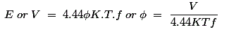
Where K is the winding constant, T is the number of turns per phase and f is frequency. Now if we change frequency synchronous speed changes but with decrease in frequency flux will increase and this change in value of flux causes saturation of rotor and stator cores which will further cause increase in no load current of the motor . So, its important to maintain flux , φ constant and it is only possible if we change voltage . i.e if we decrease frequency flux increases but at the same time if we decrease voltage flux will also decease causing no change in flux and hence it remains constant. So, here we are keeping the ratio of V/ f as constant. Hence its name is V/ f method. For controlling the speed of three phase induction motor by V/ f method we have to supply variable voltage and frequency which is easily obtained by using converter and inverter set. - Controlling supply voltage: The torque produced by running three phase induction motor is given by
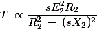
In low slip region (sX)2 is very very small as compared to R2 . So, it can be neglected. So torque becomes
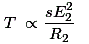
Since rotor resistance, R2 is constant so the equation of torque further reduces to
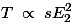
We know that rotor induced emf E2 ∝ V. So, T ∝ sV2.
From the equation above it is clear that if we decrease supply voltage torque will also decrease. But for supplying the same load, the torque must remains the same and it is only possible if we increase the slip and if the slip increases the motor will run at reduced speed . This method of speed control is rarely used because small change in speed requires large reduction in voltage, and hence the electric current drawn by motor increases, which cause over heating of induction motor. - Changing the number of stator poles : The stator poles can be changed by two methods
- Multiple stator winding method.
- Pole amplitude modulation method (PAM)
- Multiple stator winding method – In this method of speed control of three phase induction motor , the stator is provided by two separate winding. These two stator windings are electrically isolated from each other and are wound for two different pole numbers. Using switching arrangement, at a time , supply is given to one winding only and hence speed control is possible. Disadvantages of this method is that the smooth speed control is not possible . This method is more costly and less efficient as two different stator winding are required. This method of speed control can only be applied for squirrel cage motor.
- Pole amplitude modulation method (PAM) – In this method of speed control of three phase induction motor the original sinusoidal mmf wave is modulated by another sinusoidal mmf wave having different number of poles.
- Adding rheostat in the stator circuit - In this method of speed control of three phase induction motor rheostat is added in the stator circuit due to this voltage gets dropped .In case of three phase induction motor torque produced is given by T ∝ sV22. If we decrease supply voltage torque will also decrease. But for supplying the same load , the torque must remains the same and it is only possible if we increase the slip and if the slip increase motor will run reduced speed.
Let f1(θ) be the original mmf wave of induction motor whose speed is to be controlled.
f2(θ) be the modulation mmf wave.
P1 be the number of poles of induction motor whose speed is to be controlled.
P2 be the number of poles of modulation wave.
After modulation resultant mmf wave
So we get, resultant mmf wave
Therefore the resultant mmf wave will have two different number of poles
Therefore by changing the number of poles we can easily change the speed of three phase induction motor.
Speed Control from Rotor Side
- Adding external resistance on rotor side – In this method of speed control of three phase induction motor external resistance are added on rotor side. The equation of torque for three phase induction motor is
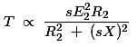 The three phase induction motor operates in low slip region .In low slip region term (sX)2 becomes very very small as compared to R2. So, it can be neglected . and also E2 is constant. So the equation of torque after simplification becomes,
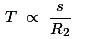
Now if we increase rotor resistance, R2 torque decreases but to supply the same load torque must remains constant. So, we increase slip, which will further results in decrease in rotor speed. Thus by adding additional resistance in rotor circuit we can decrease the speed of three phase induction motor. The main advantage of this method is that with addition of external resistance starting torque increases but this method of speed control of three phase induction motor also suffers from some disadvantages :- The speed above the normal value is not possible.
- Large speed change requires large value of resistance and if such large value of resistance is added in the circuit it will cause large copper loss and hence reduction in efficiency.
- Presence of resistance causes more losses.
- This method cannot be used for squirrel cage induction motor.
- Cascade control method – In this method of speed control of three phase induction motor, the two three phase induction motor are connected on common shaft and hence called cascaded motor. One motor is the called the main motor and another motor is called the auxiliary motor. The three phase supply is given to the stator of the main motor while the auxiliary motor is derived at a slip frequency from the slip ring of main motor.
Let NS1 be the synchronous speed of main motor.
NS2 be the synchronous speed of auxiliary motor.
P1 be the number of poles of the main motor.
P2 be the number of poles of the auxiliary motor.
F is the supply frequency.
F1 is the frequency of rotor induced emf of main motor.
N is the speed of set and it remains same for both the main and auxiliary motor as both the motors are mounted on common shaft.
S1 is the slip of main motor.
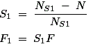
The auxiliary motor is supplied with same frequency as the main motor i.e
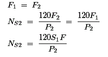
Now put the value of
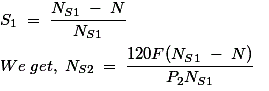
Now at no load , the speed of auxiliary rotor is almost same as its synchronous speed i.e N = NS2
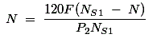
Now rearrange the above equation and find out the value of N, we get,
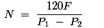 This cascaded set of two motors will now run at new speed having number of poles (P1 + P2). In the above method the torque produced by the main and auxiliary motor will act in same direction, resulting in number of poles (P1 + P2). Such type of cascading is called cumulative cascading. There is one more type of cascading in which the torque produced by the main motor is in opposite direction to that of auxiliary motor. Such type of cascading is called differential cascading; resulting in speed corresponds to number of poles (P1 - P2).
In this method of speed control of three phase induction motor, four different speeds can be obtained- When only main induction motor work, having speed corresponds to NS1 = 120 F / P1.
- When only auxiliary induction motor work, having speed corresponds to NS2 = 120 F / P2.
- When cumulative cascading is done, then the complete set runs at a speed of N = 120F / (P1 + P2).
- When differential cascading is done, then the complete set runs at a speed of N = 120F / (P1 - P2).
- Injecting slip frequency emf into rotor side - when the speed control of three phase induction motor is done by adding resistance in rotor circuit, some part of power called, the slip power is lost as I2R losses. Therefore the efficiency of three phase induction motor is reduced by this method of speed control. This slip power loss can be recovered and supplied back in order to improve the overall efficiency of three phase induction motor and this scheme of recovering the power is called slip power recovery scheme and this is done by connecting an external source of emf of slip frequency to the rotor circuit. The injected emf can either oppose the rotor induced emf or aids the rotor induced emf. If it oppose the rotor induced emf, the total rotor resistance increases and hence speed decreases and if the injected emf aids the main rotor emf the total resistance decreases and hence speed increases. Therefore by injecting induced emf in rotor circuit the speed can be easily controlled. The main advantage of this type of speed control of three phase induction motor is that wide range of speed control is possible whether its above normal or below normal speed.
 by
by